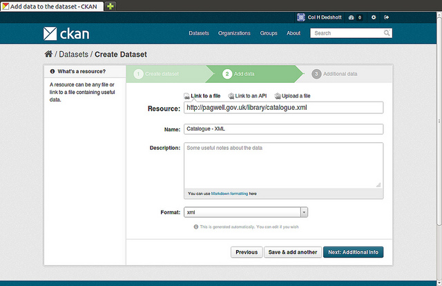
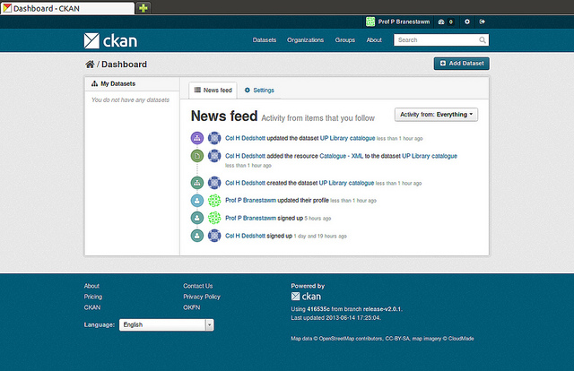
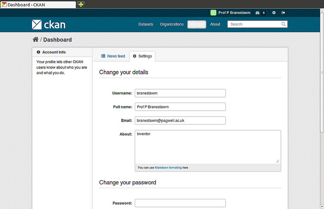

User guide
This user guide covers using AGRASTAT’s web interface to organize, publish and find data. AGRASTAT also has a powerful API (machine interface), which makes it easy to develop extensions and links with other information systems. The API is documented in API guide.
Some web UI features relating to site administration are available only to users with sysadmin status, and are documented in Sysadmin guide.
What is AGRASTAT?
AGRASTAT is a tool for share data based on CKAN. (Think of a content management system like WordPress - but for data, instead of pages and blog posts.) It helps you manage and publish collections of data. It is used by national and local governments, research institutions, and other organizations who collect a lot of data.
Once your data is published, users can use its faceted search features to browse and find the data they need, and preview it using maps, graphs and tables - whether they are developers, journalists, researchers, NGOs, citizens, or even your own staff.
Datasets and resources
For AGRASTAT purposes, data is published in units called “datasets”. A dataset is a parcel of data - for example, it could be the crime statistics for a region, the spending figures for a government department, or temperature readings from various weather stations. When users search for data, the search results they see will be individual datasets.
A dataset contains two things:
Information or “metadata” about the data. For example, the title and publisher, date, what formats it is available in, what license it is released under, etc.
A number of “resources”, which hold the data itself. AGRASTAT does not mind what format the data is in. A resource can be a CSV or Excel spreadsheet, XML file, PDF document, image file, linked data in RDF format, etc. AGRASTAT can store the resource internally, or store it simply as a link, the resource itself being elsewhere on the web. A dataset can contain any number of resources. For example, different resources might contain the data for different years, or they might contain the same data in different formats.
Note
On early AGRASTAT versions, datasets were called “packages” and this name has stuck in some places, specially internally and on API calls. Package has exactly the same meaning as “dataset”.
Using AGRASTAT
Registering and logging in
Note
Registration is needed for most publishing features and for personalization features, such as “following” datasets. It is not needed to search for and download data.
To create a user ID, use the “Register” link at the top of any page. AGRASTAT will ask for the following:
Username – choose a username using only letters, numbers, - and _ characters. For example, “jbloggs” or “joe_bloggs93”.
Full name – to be displayed on your user profile
E-mail address – this will not be visible to other users
Password – enter the same password in both boxes

If there are problems with any of the fields, AGRASTAT will tell you the problem and enable you to correct it. When the fields are filled in correctly, AGRASTAT will create your user account and automatically log you in.
Note
It is perfectly possible to have more than one user account attached to the same e-mail address. For this reason, choose a username you will remember, as you will need it when logging in.
Features for publishers
Adding a new dataset
Note
You may need to be a member of an organization in order to add and edit datsets. See the section Creating an organization below. On https://agrastat.akvotest.org, you can add a dataset without being in an organization, but dataset features relating to authorization and organizations will not be available.
Step 1. You can access AGRASTAT’s “Create dataset” screen in two ways.
Select the “Datasets” link at the top of any page. From this, above the search box, select the “Add Dataset” button.
Alternatively, select the “organizations” link at the top of a page. Now select the page for the organization that should own your new dataset. Provided that you are a member of this organization, you can now select the “Add Dataset” button above the search box.
Step 2. AGRASTAT will ask for the following information about your data. (The actual data will be added in step 4.)
Title – this title will be unique across AGRASTAT, so make it brief but specific. E.g. “UK population density by region” is better than “Population figures”.
Description – You can add a longer description of the dataset here, including information such as where the data is from and any information that people will need to know when using the data.
Tags – here you may add tags that will help people find the data and link it with other related data. Examples could be “population”, “crime”, “East Anglia”. Hit the <return> key between tags. If you enter a tag wrongly, you can use its delete button to remove it before saving the dataset.
License – it is important to include license information so that people know how they can use the data. This field should be a drop-down box. If you need to use a license not on the list, contact your site administrator.
Organization - If you are a member of any organizations, this drop-down will enable you to choose which one should own the dataset. Ensure the default chosen is the correct one before you proceed. (Probably most users will be in only one organization. If this is you, AGRASTAT will have chosen your organization by default and you need not do anything.)
Note
By default, the only required field on this page is the title. However, it is good practice to include, at the minimum, a short description and, if possible, the license information. You should ensure that you choose the correct organization for the dataset, since at present, this cannot be changed later. You can edit or add to the other fields later.
Step 3. When you have filled in the information on this page, select the “Next: Add Data” button. (Alternatively select “Cancel” to discard the information filled in.)
Step 4. AGRASTAT will display the “Add data” screen.
This is where you will add one or more “resources” which contain the data for this dataset. Choose a file or link for your data resource and select the appropriate choice at the top of the screen:
If you are giving AGRASTAT a link to the data, like
http://example.com/mydata.csv, then select “Link to a file” or “Link to an API”. (If you don’t know what an API is, you don’t need to worry about this option - select “Link to a file”.)If the data to be added to AGRASTAT is in a file on your computer, select “Upload a file”. AGRASTAT will give you a file browser to select it.
Step 5. Add the other information on the page. AGRASTAT does not require this information, but it is good practice to add it:
Name – a name for this resource, e.g. “Population density 2011, CSV”. Different resources in the dataset should have different names.
Description – a short description of the resource.
Format – the file format of the resource, e.g. CSV (comma-separated values), XLS, JSON, PDF, etc.
Step 6. If you have more resources (files or links) to add to the dataset, select the “Save & add another” button. When you have finished adding resources, select “Next: Additional Info”.
Step 7. AGRASTAT displays the “Additional data” screen.
Visibility – a
Publicdataset is public and can be seen by any user of the site. APrivatedataset can only be seen by members of the organization owning the dataset and will not show up in searches by other users.Author – The name of the person or organization responsible for producing the data.
Author e-mail – an e-mail address for the author, to which queries about the data should be sent.
Maintainer / maintainer e-mail – If necessary, details for a second person responsible for the data.
Custom fields – If you want the dataset to have another field, you can add the field name and value here. E.g. “Year of publication”. Note that if there is an extra field that is needed for a large number of datasets, you should talk to your site administrator about changing the default schema and dataset forms.
Note
Everything on this screen is optional, but you should ensure the “Visibility” is set correctly. It is also good practice to ensure an Author is named.
Changed in version 2.2: Previous versions of AGRASTAT used to allow adding the dataset to existing groups in this step. This was changed. To add a dataset to an existing group now, go to the “Group” tab in the Dataset’s page.
Step 8. Select the ‘Finish’ button. AGRASTAT creates the dataset and shows you the result. You have finished!
You should be able to find your dataset by typing the title, or some relevant words from the description, into the search box on any page in your AGRASTAT instance. For more information about finding data, see the section Finding data.
Editing a dataset
You can edit the dataset you have created, or any dataset owned by an organization that you are a member of. (If a dataset is not owned by any organization, then any registered user can edit it.)
Go to the dataset’s page. You can find it by entering the title in the search box on any page.
Select the “Edit” button, which you should see above the dataset title.
AGRASTAT displays the “Edit dataset” screen. You can edit any of the fields (Title, Description, Dataset, etc), change the visibility (Private/Public), and add or delete tags or custom fields. For details of these fields, see Adding a new dataset.
When you have finished, select the “Update dataset” button to save your changes.
Adding, deleting and editing resources
Go to the dataset’s “Edit dataset” page (steps 1-2 above).
In the left sidebar, there are options for editing resources. You can select an existing resource (to edit or delete it), or select “Add new resource”.
You can edit the information about the resource or change the linked or uploaded file. For details, see steps 4-5 of “Adding a new resource”, above.
When you have finished editing, select the button marked “Update resource” (or “Add”, for a new resource) to save your changes. Alternatively, to delete the resource, select the “Delete resource” button.
Deleting a dataset
Go to the dataset’s “Edit dataset” page (see “Editing a dataset”, above).
Select the “Delete” button.
AGRASTAT displays a confirmation dialog box. To complete deletion of the dataset, select “Confirm”.
Note
The “Deleted” dataset is not completely deleted. It is hidden, so it does not show up in any searches, etc. However, by visiting the URL for the dataset’s page, it can still be seen (by users with appropriate authorization), and “undeleted” if necessary. If it is important to completely delete the dataset, contact your site administrator.
Creating an organization
In general, each dataset is owned by one organization. Each organization includes certain users, who can modify its datasets and create new ones. Different levels of access privileges within an organization can be given to users, e.g. some users might be able to edit datasets but not create new ones, or to create datasets but not publish them. Each organization has a home page, where users can find some information about the organization and search within its datasets. This allows different data publishing departments, bodies, etc to control their own publishing policies.
To create an organization:
Select the “Organizations” link at the top of any page.
Select the “Add Organization” button below the search box.
AGRASTAT displays the “Create an Organization” page.
Enter a name for the organization, and, optionally, a description and image URL for the organization’s home page.
Select the “Create Organization” button. AGRASTAT creates your organization and displays its home page. Initially, of course, the organization has no datasets.
You can now change the access privileges to the organization for other users - see Managing an organization below. You can also create datasets owned by the organization; see Adding a new dataset above.
Note
Depending on how AGRASTAT is set up, you may not be authorized to create new organizations. In this case, if you need a new organization, you will need to contact your site administrator.
Managing an organization
When you create an organization, AGRASTAT automatically makes you its “Admin”. From the organization’s page you should see an “Admin” button above the search box. When you select this, AGRASTAT displays the organization admin page. This page has two tabs:
Info – Here you can edit the information supplied when the organization was created (title, description and image).
Members – Here you can add, remove and change access roles for different users in the organization. Note: you will need to know their username on AGRASTAT.
By default AGRASTAT allows members of organizations with three roles:
Member – can see the organization’s private datasets
Editor – can edit and publish datasets
Admin – can add, remove and change roles for organization members
Finding data
Searching the site
To find datasets in AGRASTAT, type any combination of search words (e.g. “health”, “transport”, etc) in the search box on any page. AGRASTAT displays the first page of results for your search. You can:
View more pages of results
Repeat the search, altering some terms
Restrict the search to datasets with particular tags, data formats, etc using the filters in the left-hand column
If there are a large number of results, the filters can be very helpful, since you can combine filters, selectively adding and removing them, and modify and repeat the search with existing filters still in place.
If datasets are tagged by geographical area, it is also possible to run AGRASTAT with an extension which allows searching and filtering of datasets by selecting an area on a map.

Searching within an organization
If you want to look for data owned by a particular organization, you can search within that organization from its home page in AGRASTAT.
Select the “Organizations” link at the top of any page.
Select the organization you are interested in. AGRASTAT will display your organization’s home page.
Type your search query in the main search box on the page.
AGRASTAT will return search results as normal, but restricted to datasets from the organization.
If the organization is of interest, you can opt to be notified of changes to it (such as new datasets and modifications to datasets) by using the “Follow” button on the organization page. See the section Managing your news feed below. You must have a user account and be logged in to use this feature.
Exploring datasets
When you have found a dataset you are interested and selected it, AGRASTAT will display the dataset page. This includes
The name, description, and other information about the dataset
Links to and brief descriptions of each of the resources
The resource descriptions link to a dedicated page for each resource. This resource page includes information about the resource, and enables it to be downloaded. Many types of resource can also be previewed directly on the resource page. .CSV and .XLS spreadsheets are previewed in a grid view, with map and graph views also available if the data is suitable. The resource page will also preview resources if they are common image types, PDF, or HTML.
The dataset page also has two other tabs:
Activity stream – see the history of recent changes to the dataset
Groups – see any group associated with this dataset.
If the dataset is of interest, you can opt to be notified of changes to it by using the “Follow” button on the dataset page. See the section Managing your news feed below. You must have a user account and be logged in to use this feature.
Search in detail
AGRASTAT supports two search modes, both are used from the same search field. If the search terms entered into the search field contain no colon (“:”) AGRASTAT will perform a simple search. If the search expression does contain at least one colon (“:”) AGRASTAT will perform an advanced search.
Simple Search
AGRASTAT defers most of the search to Solr and by default it uses the DisMax Query Parser that was primarily designed to be easy to use and to accept almost any input without returning an error.
The search words typed by the user in the search box defines the main “query” constituting the essence of the search. The + and - characters are treated as mandatory and prohibited modifiers for terms. Text wrapped in balanced quote characters (for example, “San Jose”) is treated as a phrase. By default, all words or phrases specified by the user are treated as optional unless they are preceded by a “+” or a “-“.
Note
AGRASTAT will search for the complete word and when doing simple search are wildcards are not supported.
Simple search examples:
censuswill search for all the datasets containing the word “census” in the query fields.census +2019will search for all the datasets contaning the word “census” and filter only those matching also “2019” as it is treated as mandatory.census -2019will search for all the datasets containing the word “census” and will exclude “2019” from the results as it is treated as prohibited."european census"will search for all the datasets containing the phrase “european census”.
Solr applies some preprocessing and stemming when searching. Stemmers remove morphological affixes from words, leaving only the word stem. This may cause, for example, that searching for “testing” or “tested” will show also results containing the word “test”.
Testingwill search for all the datasets containing the word “Testing” and also “Test” as it is the stem of “Testing”.
Note
If the Name of the dataset contains words separated by “-” it will consider each word independently in the search.
Advanced Search
If the query has a colon in it it will be considered a fielded search and the
query syntax of Solr will be used to search. This will allow us to use wildcards
“*”, proximity matching “~” and general features described in Solr docs.
The basic syntax is field:term.
Advanced Search Examples:
title:europeanthis will look for all the datasets containing in its title the word “european”.title:europ*this will look for all the datasets containing in its title a word that starts with “europ” like “europe” and “european”.title:europe || title:africawill look for datasets containing “europe” or “africa” in its title.title: "european census" ~ 4A proximity search looks for terms that are within a specific distance from one another. This example will look for datasets which title contains the words “european” and “census” within a distance of 4 words.author:powell~AGRASTAT supports fuzzy searches based on the Levenshtein Distance, or Edit Distance algorithm. To do a fuzzy search use the “~” symbol at the end of a single-word term. In this example words like “jowell” or “pomell” will also be found.
Note
Field names used in advanced search may differ from Datasets Attributes,
the mapping rules are defined in the schema.xml file. You can use title
to search by the dataset name and text to look in a catch-all field that
includes author, license, mantainer, tags, etc.
Note
AGRASTAT uses Apache Solr as its search engine. For further details check the Solr documentation. Please note that AGRASTAT sometimes uses different values than what is mentioned in that documentation. Also note that not the whole functionality is offered through the simplified search interface in AGRASTAT or it can differ due to extensions or local development in your AGRASTAT instance.
Personalization
AGRASTAT provides features to personalize the experience of both searching for and publishing data. You must be logged in to use these features.
Managing your news feed
At the top of any page, select the dashboard symbol (next to your name). AGRASTAT displays your News feed. This shows changes to datasets that you follow, and any changed or new datasets in organizations that you follow. The number by the dashboard symbol shows the number of new notifications in your News feed since you last looked at it. As well as datasets and organizations, it is possible to follow individual users (to be notified of changes that they make to datasets).
If you want to stop following a dataset (or organization or user), go to the dataset’s page (e.g. by selecting a link to it in your News feed) and select the “Unfollow” button.
Managing your user profile
You can change the information that AGRASTAT holds about you, including what other users see about you by editing your user profile. (Users are most likely to see your profile when you edit a dataset or upload data to an organization that they are following.) To do this, select the gearwheel symbol at the top of any page.
AGRASTAT displays the user settings page. Here you can change:
Your username
Your full name
Your e-mail address (note: this is not displayed to other users)
Your profile text - an optional short paragraph about yourself
Your password
Make the changes you require and then select the “Update Profile” button.
Note
If you change your username, AGRASTAT will log you out. You will need to log back in using your new username.